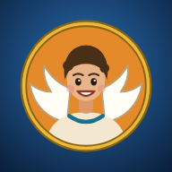

Ο Δαίδαλος και ο Ίκαρος – Η απόδραση από τον ουρανό
Ένα παιχνίδι Φυσικής: δυνάμεις, βαρύτητα, πτήση, θερμότητα, ενέργεια
Καλώς ήρθες ξανά! Τα φτερά σε περιμένουν εκεί που τα άφησες.
Ο βασιλιάς Μίνωας κρατά κλεισμένους στην Κρήτη τον μεγάλο τεχνίτη Δαίδαλο και τον γιο του, τον Ίκαρο. Τη στεριά και τη θάλασσα τις φυλάνε οι στρατιώτες του — μόνο ο ουρανός είναι ελεύθερος. Ο Δαίδαλος έχει ένα σχέδιο: φτερά από πούπουλα και κερί. Βοήθησε τον Ίκαρο να τα φτιάξει ασφαλή και να βρει τη σωστή διαδρομή για την απόδραση!
Τέσσερις δοκιμασίες σε κάθε στάδιο
- 1. ΓρίφοιΟ Δαίδαλος ρωτά «Τι είμαι;» και εσύ διαλέγεις τη σωστή απάντηση.
- 2. ΚρυπτόλεξοΒρες τις κρυμμένες λέξεις: πάτησε το πρώτο και το τελευταίο γράμμα.
- 3. ΑκροστιχίδαΓράψε τις λέξεις· τα πρώτα τους γράμματα σχηματίζουν μια κρυφή λέξη.
- 4. ΚατασκευήΠάρε τη σωστή απόφαση για τα φτερά: υλικό, μέγεθος, σχήμα, χρώμα, απογείωση.
Τα κερδίζεις με κάθε σωστή απάντηση.
Ένα για κάθε στάδιο που ολοκληρώνεις. Θα τα χρειαστείς όλα στη μεγάλη πτήση!

Το ήξερες; Το 1988 ο Έλληνας πρωταθλητής ποδηλασίας Κανέλλος Κανελλόπουλος πέταξε από την Κρήτη ως τη Σαντορίνη — 115 χιλιόμετρα πάνω από τη θάλασσα — με ένα αεροσκάφος που το κινούσαν μόνο τα πόδια του. Το αεροσκάφος λεγόταν «Δαίδαλος»!
Το εργαστήριο του Δαίδαλου
Κάθε στάδιο προσθέτει ένα κομμάτι στα φτερά του Ίκαρου.
- Κομμάτι που λείπει ακόμη
- Επόμενο στάδιο
- Στάδιο που ολοκλήρωσες
- Κλειδωμένο στάδιο
Η μεγάλη πτήση
Έξι σταθμοί ως την ελευθερία: σε καθέναν ο Ίκαρος ρωτά κι εσύ διαλέγεις τη σωστή διαδρομή.
Ελεύθεροι! Ο Ίκαρος έφτασε στην Ικαρία
Με ασφαλή φτερά και σωστή διαδρομή — χάρη σε εσένα.